How a redesign led to 90%+ of practices increasing their usage of the messaging system
The updated messaging system allowed messages to be sent in more situations with more customisation
Automation of patient communications left more time for practice staff to focus on patient care
The client extended their contract after successful delivery of this project
This project aimed to address a major corporate client at risk of churning by modernising the messaging system and delivering a flexible, automated communications experience.
They were having trouble ensuring patients attended their appointments. As their practices dealt with at-risk youth patients, this was essential.
Users were not using the native messaging system — they were either using other systems or managing it manually. Increasing usage drove revenue.
A key market differentiator of Helix is its cloud infrastructure and automation capability in a market still primarily dominated by on-premises software.
Patients rely on communications to schedule, confirm and attend appointments as well as to receive information and results
Practices have a burden of care to ensure that at risk patients attend their consults and can be liable if they don't
Ensuring patients attend and avoiding no-shows maximises revenue and makes the most use of the scarce availability of doctors
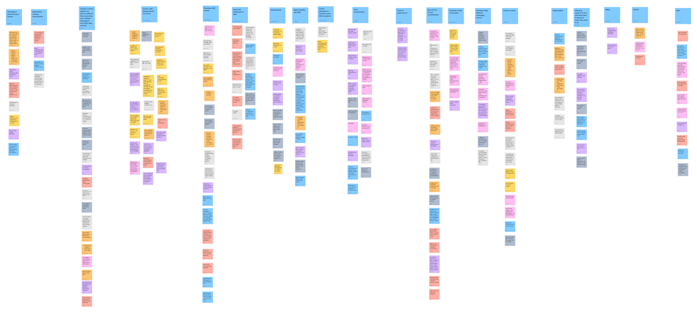
Affinity mapping of user research insights
Through user research, workshops and consulting with subject-matter experts, the process could be mapped out and key insights about the area could be established
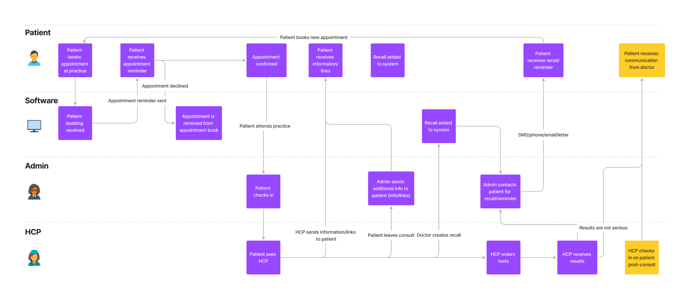
User journey for patient communications
Booking, reminding patients of appointments and billing follow-ups are important communication occasions
Ensuring patients attend their appointments maintains practice revenue and avoids wasting doctor's time
Although tedious, ensuring it is done effectively has consequences for patient care and medico-legal obligations
Vulnerable patient groups such as those with chronic conditions or young patients require ongoing and detailed communications
Areas were identified where Helix was not adequate for practice needs. In the current state practices were resorting to calling patients manually, a huge administrative burden that's difficult to document.
Youth mental health practices with high risk patients needed to ensure patients were prepared for and attended consults
Specialist appointments made months in advance needed longer-timeframe reminders and record keeping
Only one text for all appointments — the system didn't have flexibility to address our diverse user base's situations
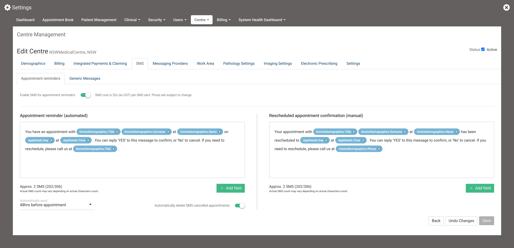
Original design for appointment reminders
Speaking to our users there were three key flows when practices needed to communicate with patients that guided the design direction
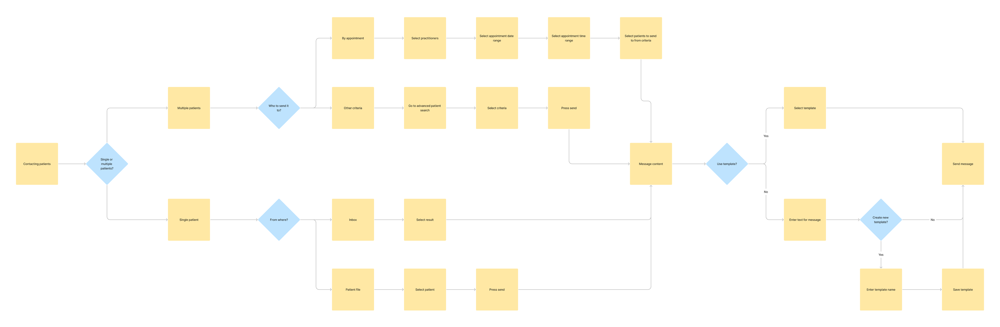
Mapping out message flow
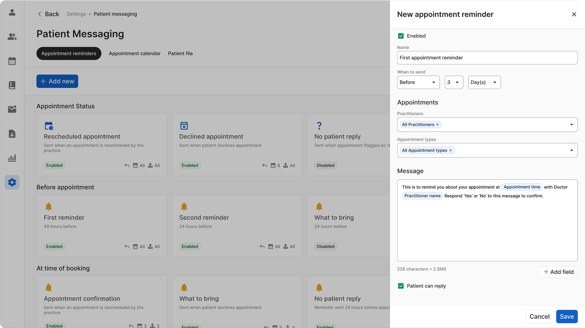
Setting up a new appointment reminder
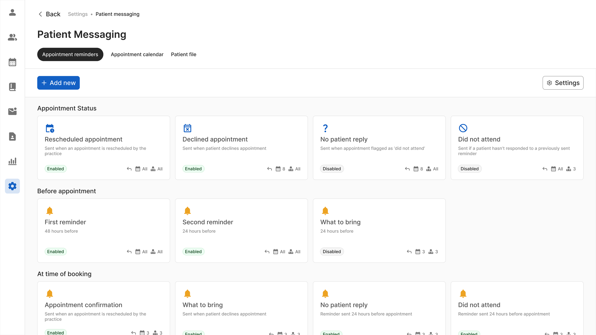
Appointment reminders dashboard
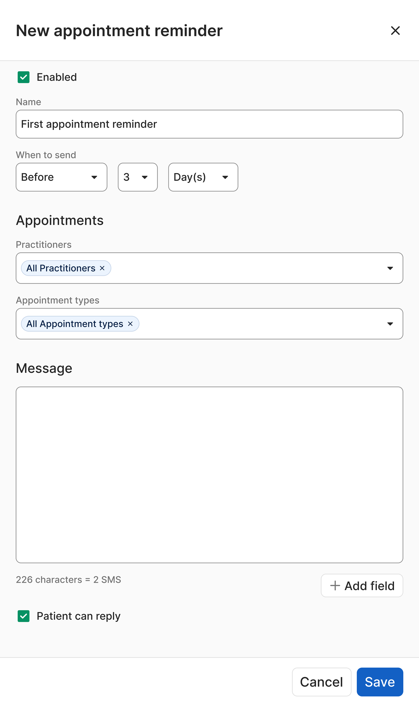
User research indicated three important situations:
This allows practices to set up messages for specific scenarios and situations, enabling greater automation
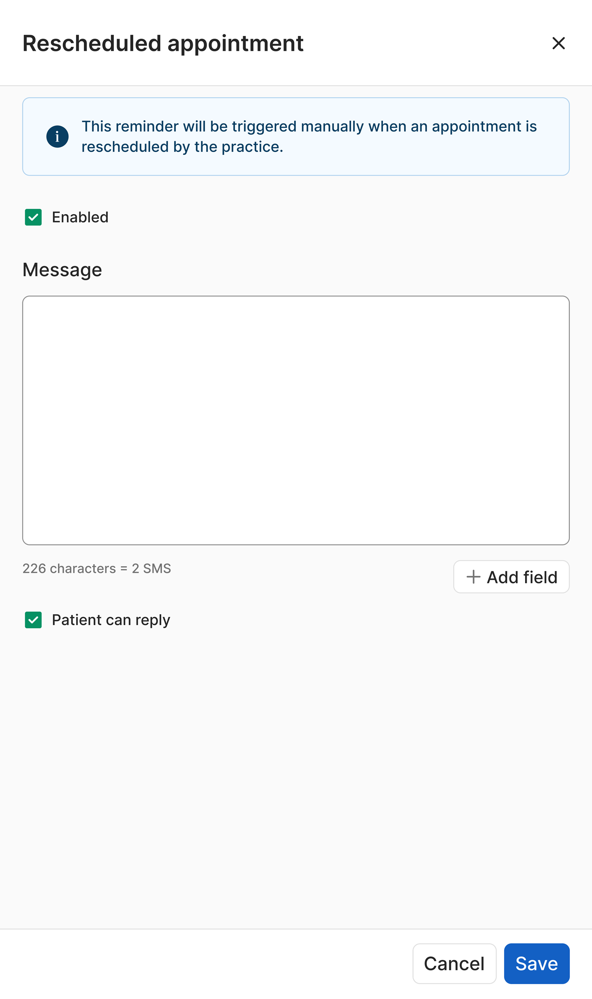
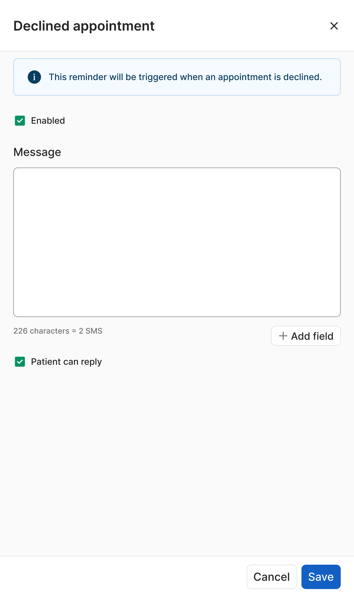
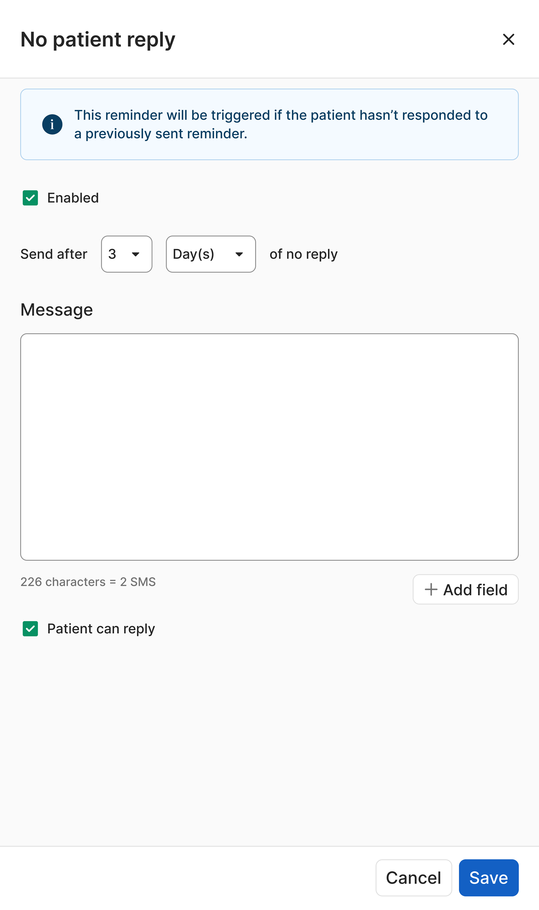
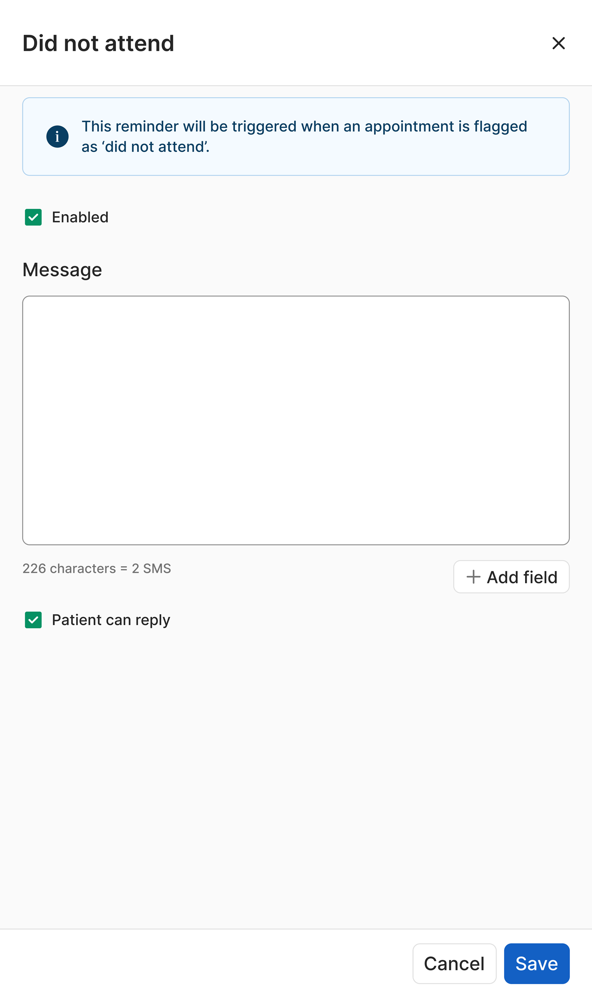
Final dashboard design
Key objectives were achieved including increased usage of the messaging system, preventing client churning and positioning Helix as a leader in automated messaging
A large client received early access to beta and renewed their contract due to the new functionality
The messaging system allowed messages to be sent in more situations with more customisation than competitors
Beta customers reported utilising Helix messaging more with the new system
This project was undertaken on short notice and was high priority. Adapting to these circumstances resulted in important learnings.
Consistent contact with users through all stages was essential for the project's success
Working around legacy design systems made design significantly more difficult — dedicating time for this would've improved the outcome
Time constraints necessitated staged design phases, however this resulted in a less cohesive product